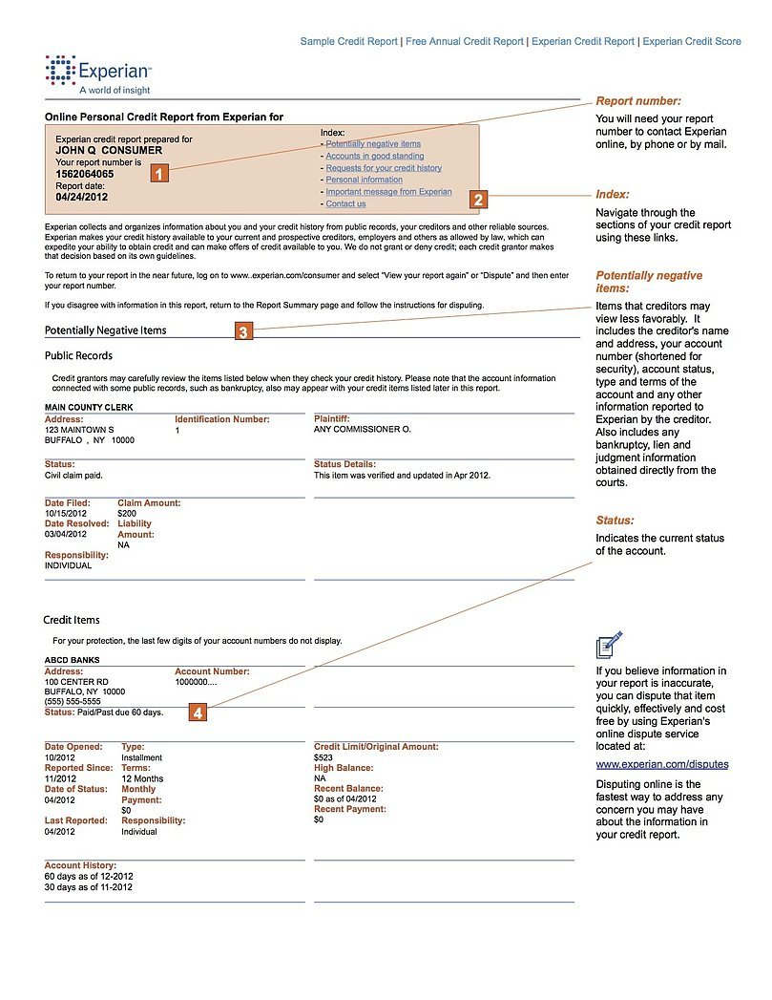

Free Credit Score - No Credit Card Required - Experian
 Sign In Skip to main navigation Consumer Small Business Business About Experian Consumer Support Credit Advice Global Sites Skip to main content Reports & Scores Identity Theft Protection Credit Cards & Loans Credit Support Education Sign In Free Credit Report Free Credit Score Free Credit Monitoring Free Experian Boost Experian CreditLock 3 Bureau Credit Report and Scores Compare All ProductsInstantly increase your credit scores for free.
Find out how Identity Theft Protection Free Dark Web Scan Free Child ID Scan Family ID Theft Protection View Plans & PricingIs your information on the Dark Web?
Find out for free Credit Cards Loans Credit Cards Rewards Cash Back For Bad Credit For Fair Credit Balance Transfer Secured Low Interest For Students Loans Personal Debt Consolidation StudentDiscover your personalized credit card offers with CreditMatch.
Sign up for free Disputes Fraud Alert Security Freeze Denied Credit ID Theft Victim Assistance Contact UsFind help to protect and understand your credit.
View all support Reports & Scores Improving Credit Identity Theft & Fraud Personal Finance Credit Card Reviews Loan Reviews Latest News & ResearchGet answers to your credit questions.
View all educationFree Credit Score
Get your FICO ® Score * for free and see how you might look to a lender.
No credit card required
Get your FICO ® Score for free* Credit score calculated based on FICO ® Score 8 model. Your lender or insurer may use a different FICO ® Score than FICO ® Score 8, or another type of credit score altogether. Learn more .
Why check your Credit Score with Experian?
Credit Score factors
View the specific score factors that are impacting your FICO ® Score.
Your credit score is calculated from the information found in your credit report. See the factors influencing your FICO ® Score, including payment history, amount of debt, credit history length, amount of new credit, and credit mix.
Credit Score tracking
FICO ® Score tracking powered by Experian data.
With an interactive FICO ® Score tracker, you can visualize your progress over time and receive customized alerts when your score or rating change.
Boost your Credit Scores
Raise your FICO ® Score instantly for free with Experian Boost
Get credit for your phone and utility bills by adding positive payments to your Experian credit file. Other services such as credit repair may cost you thousands of dollars and only help remove inaccuracies from your credit report.
Credit cards matched for you
See personalized credit card and loan offers based on your credit score with CreditMatch.
Use CreditMatch to compare credit card rates, rewards, fees, and other details to find the right card right for you.
Get your FICO ® Score for freeCredit Score resources
If I Do a Balance Transfer to Get 0% Interest, Will My Score Go Down?
Why Do I Have So Many Credit Scores With One Credit Bureau?
7 Common Credit Mistakes and How to Avoid Them
Credit Advice
What is a Credit Score?
A credit score is a number generated by an algorithm using the information in your credit report and is usually updated each month. Lenders and other service providers use credit scores to indicate your creditworthiness and how likely you are to repay a loan on time.
What is a good Credit Score?
There are multiple credit scoring models which means that a good credit score can be different depending on the scoring model being used. Credit scores can range between 300 and 850. A good credit score generally starts at 700, and a score of 800 or above is considered excellent.
One of the most well-known credit scores is the FICO ® Scores. A good FICO ® Score starts at 670. The higher your credit score is, the better your chances are to be approved for a loan with better rates.
Why is checking your Credit Score important?
Checking your free credit score can be a good indicator of where your credit stands and whether you need to work towards improving your score. Lenders such as credit card companies, banks, and car dealerships providing auto loans use credit scores along with other criteria to decide whether to approve you for credit. Knowing your credit score before applying for a loan or any type of credit can help you better prepare and eliminate surprises such as unfavorable terms or even denial.
How to improve your Credit Score
Improving your credit score can take time but the sooner you address the factors affecting your credit, the faster your score will increase. You can increase your scores by taking the necessary steps, like paying bills on time, keeping your credit utilization ratio low, and paying down debt. It can also be a good idea to keep unused credit cards open and only apply for new credit accounts when necessary. Finally, you might want to make sure your credit reports don’t contain any inaccuracies that can potentially hurt your scores.
Another effective way to raise your credit score quickly is by using tools like Experian Boost TM , which allows you to add utility and telecom bills to your credit file. It could give your credit score an immediate increase that can be especially helpful to those struggling with building credit.
What can impact my Credit Score?
Your credit score can be affected by a number of factors and while the exact criteria can vary by scoring model, the most influential factor is typically your payment history. Even one missed payment can have a negative effect on your score.
Your credit utilization ratio also plays a big factor in determining your score. It’s solely based on your revolving credit and measured by how much of your available credit you’re using.
Credit scoring models look at the number, types and age of accounts you have. Maintaining a good mix of credit and positive history shows that you are able to handle new credit responsibly.
Although hard inquiries don’t make a huge impact on your score, they can temporarily lower it. Hard inquiries stay on a credit report for 2 years, but in general, the impact to your FICO Score will lessen after 1 year.
Lastly, negative information on your credit such as late or missed payments, foreclosures, collection accounts, and charge-offs can negatively impact your credit.
Does checking my free Credit Score hurt my score?
Checking your free credit score is considered a soft inquiry. Soft inquiries are not a factor in credit scoring models and therefore don’t impact your credit scores.
Why did my Credit Score drop?
Credit scores change all the time. If you notice that your scores went down , there may be a few reasons why. For example, your score could have dropped if you have a late or missed payment or recently applied for a new loan or credit card. Other possible reasons include increased credit utilization, closing an account, or a new derogatory mark on your report. Checking your free credit score can help you narrow down why your credit score may have dropped.
Find out your Credit Score today
Get your FICO ® Score for freeNo credit card required
Credit & Identity Theft Credit & Identity Theft Free Credit Report Free Credit Score Free Credit Monitoring Free Experian Boost Experian CreditLock 3-Bureau Credit Report and FICO ® Scores Identity Theft Protection What is a Good Credit Score Improving Your Credit Score How to Build Credit CreditMatch CreditMatch Rewards Cards Cash Back Cards Low Interest Cards Balance Transfer Cards Secured Cards Cards for Bad Credit Cards for Fair Credit Personal Loans Credit Card Reviews Loan Reviews Support Support Annual Credit Report Disputes Security Freeze Fraud Alert Identity Theft Victim Assistance Document Upload Service How to Dispute Report Information How to Place and Lift a FreezeGet the Free Experian app:
Follow us:
Legal Terms & Conditions Privacy Policy CA Privacy Policy Press Ad Choices Careers Investor Relations Contact Us© 2020 Experian. All rights reserved.
Experian and the Experian trademarks used herein are trademarks or registered trademarks of Experian and its affiliates. The use of any other trade name, copyright, or trademark is for identification and reference purposes only and does not imply any association with the copyright or trademark holder of their product or brand. Other product and company names mentioned herein are the property of their respective owners. Licenses and Disclosures .